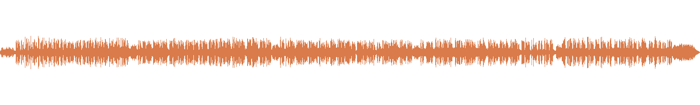
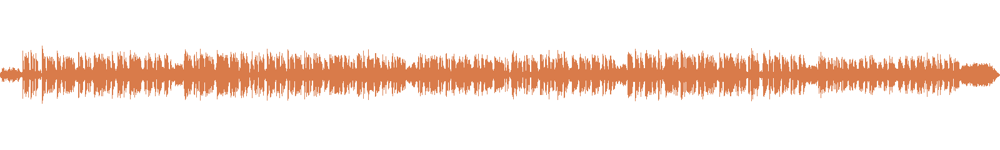

The Daily Aside
A personal radio show for your day, with room to wander.
寒露を過ぎて — 瞬間とその後、手書きの一言、心の距離

「瞬間」と「その後」を、一枚の流れとして見る。なんだか、物語の書き方にも似ていますね。
トピック
1. 寒露と世界郵便デー 2. 東京大学の「対数的」超高速カメラ（JST 2026-10-01） 3. 文化庁「国語に関する世論調査」— 手書きと「ひもとく」（2026-10-02） 4. 家族ケアとチャットボットによる振り返り、心の距離（JST 2026-10-06） 5. 明日へ：誰かに短い一言を手で書いてみる
Quiet Signals: World Post Day, Polar Ice and Bittersweet Words

A whole block of polar ice, listening patiently for something that almost never speaks.
Topics
1. World Post Day and early autumn 2. The 2026 Nobel Prize in Physics: Francis Halzen and IceCube 3. The 2026 Nobel Prize in Literature: Anne Carson 4. World Mental Health Day 2026 (WHO) 5. For tomorrow: write someone a short note